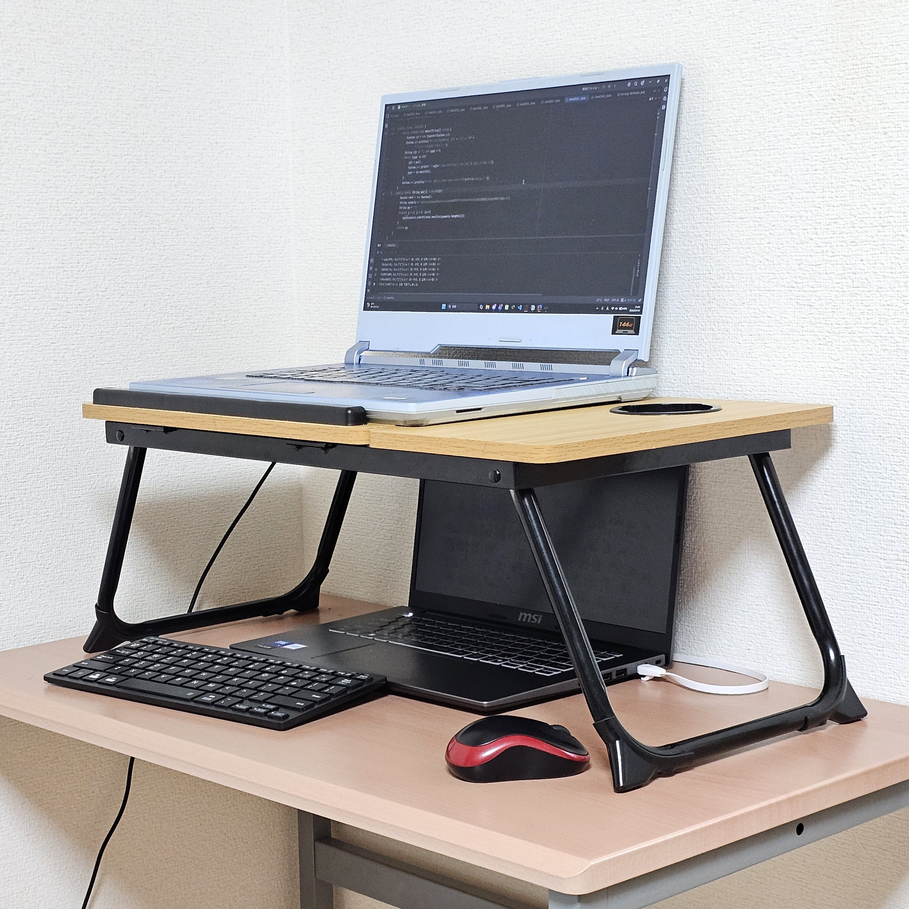
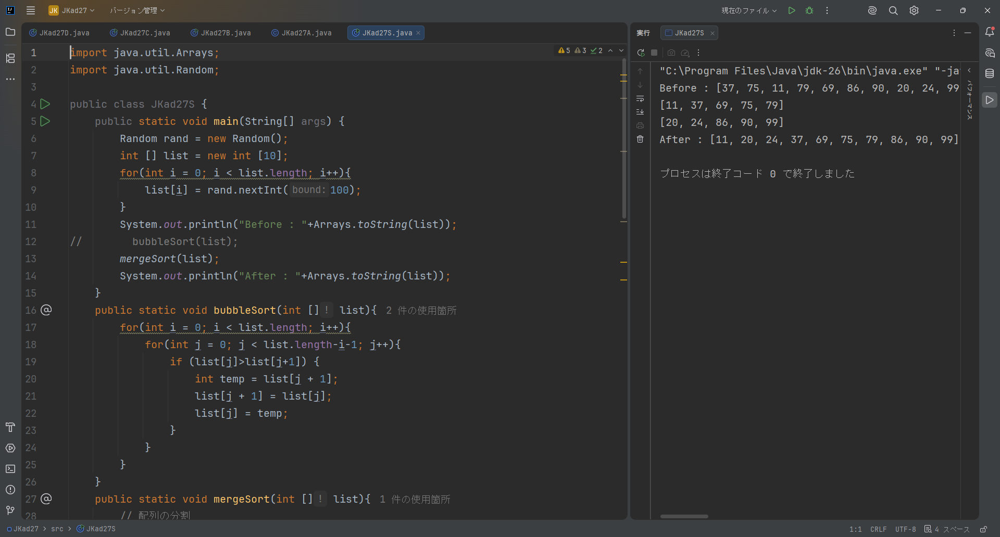
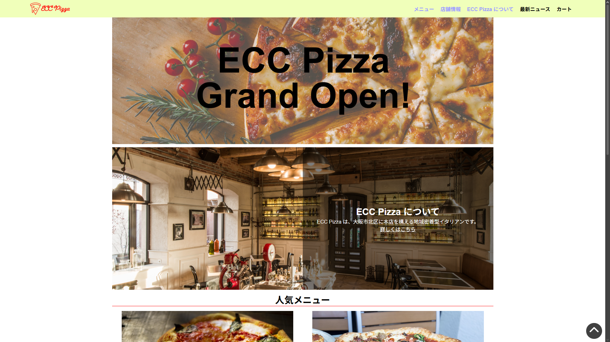

About
初めまして、Wai Lin Ooと申します。フールスタックエンジニアを目指しておるIT専門学生です。 現在、学校でIT系の基本的な知識を習い、自宅ではGitとAWSなどのスキルを身につけています。 「学び続ける姿勢」を大切にし、新しい技術にも積極的に挑戦しています。

WorkStation Setup
Ethernet（LAN）接続を利用し、2台のノートパソコンを連携させる環境を構築しました。メインPCと持ち運び用PCを接続し、持ち運び用PCをメインPCの仮想ディスプレイとして利用することで、メインPCから2台目のPCを操作できるシステムを実現しました。これにより、マルチディスプレイ環境を活用した効率的な作業環境を構築し、ネットワーク接続やリモートディスプレイ技術への理解を深めました。
Skills
バックエンド
Javaを使用したバックエンド開発を学習しています。現在は、変数・データ型・条件分岐・繰り返し処理・配列・クラス・オブジェクト・メソッドなど、Javaの基礎を習得しています。基本的なプログラムを作成し、処理を組み立てる力を身につけています。今後はオブジェクト指向やデータベース連携、Webアプリケーション開発などのバックエンド技術を学び、実践的な開発スキルをさらに向上させていきたいと考えています。
ウェブ
HTMLとCSSを用いたWebページ制作を学習しています。基本的なWebサイトの構造を理解し、見やすく使いやすいレイアウトの作成や、レスポンシブデザインの基礎を学んでいます。また、FlexboxやCSSアニメーションなどを活用し、シンプルなWebページを制作することができます。
アルゴリズム
プログラムの基本となるアルゴリズムについて学習しています。フローチャートや疑似言語（擬似コード）を用いて処理の流れを設計し、アルゴリズムを論理的に考える力を身につけています。また、バブルソート、選択ソート、挿入ソートなどの基本的なソートアルゴリズムの仕組みを理解し、それぞれの特徴や処理方法について学習しました。
Works

JKad27S
10個のランダムな数字を順番（昇順）に並べ替える（ソートする）Javaコードです。
処理の流れはとてもシンプルで、まず配列を半分に区切り、前半と後半のグループをそれぞれバブルソートで並べ替えます。最後に、その綺麗に並んだ2つのグループを順番に並べ直して1つの大きな完成された配列に合体（マージ）させています。
ECC Pizza
このWebサイトは、架空のレストラン「ECC Pizza」のホームページです。店舗の紹介、人気メニューの写真と価格、最新ニュースなどを掲載し、利用者がレストランの情報を分かりやすく確認できるように設計しました。シンプルで見やすいデザインを意識し、快適に閲覧できるWebサイトを目指しました。
